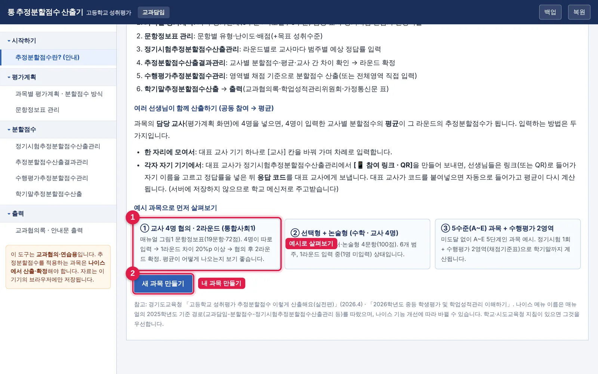
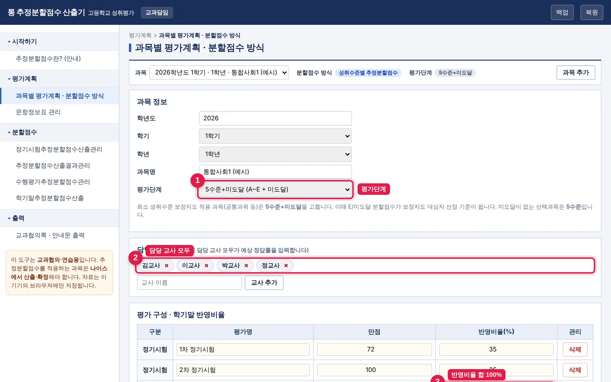
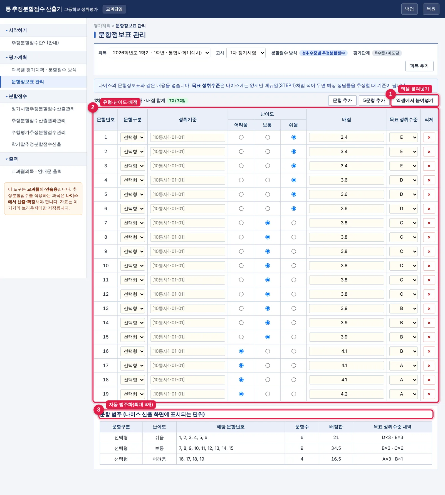
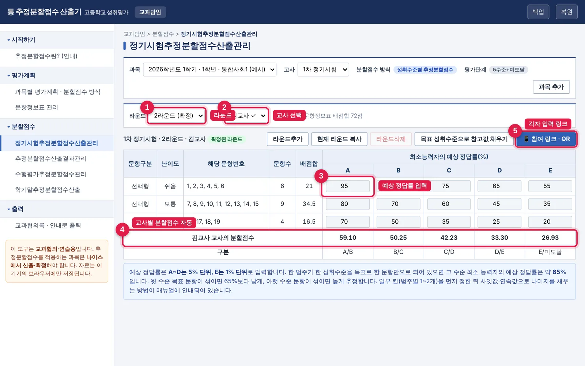
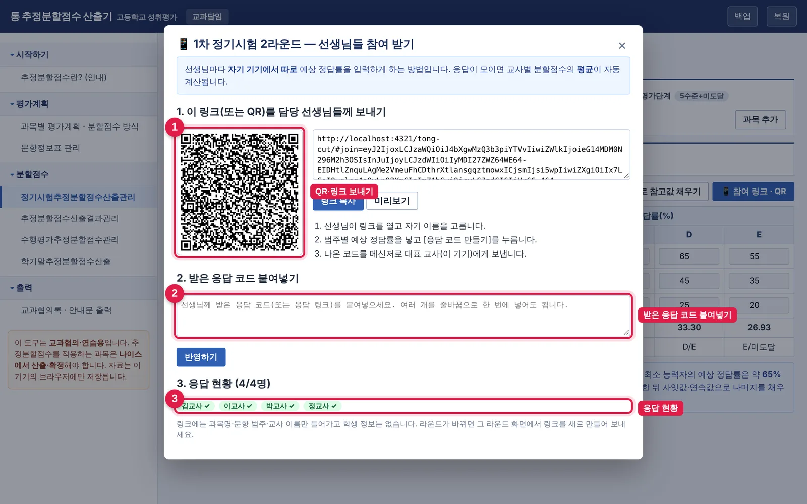
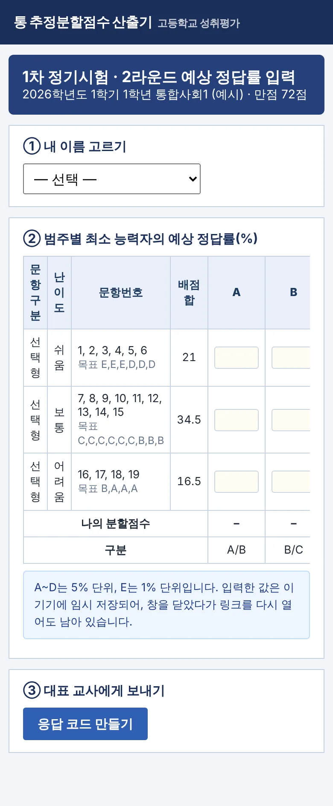
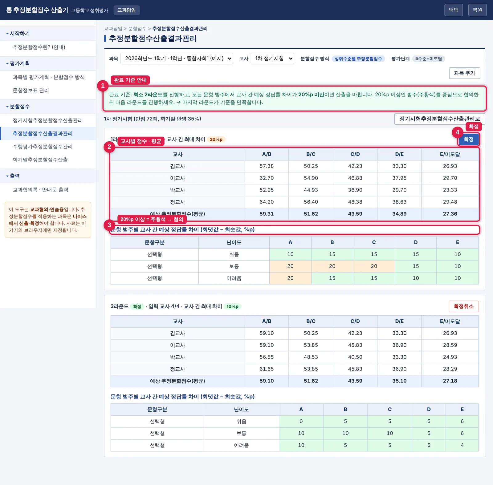
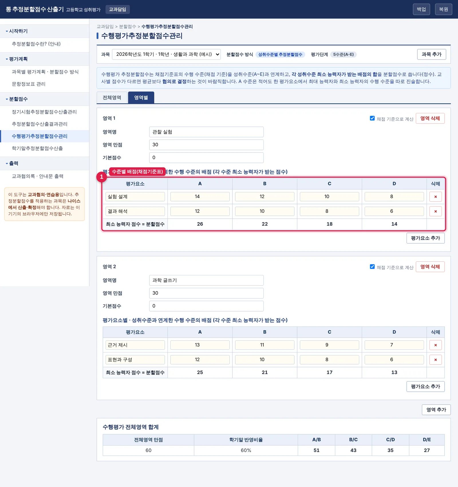
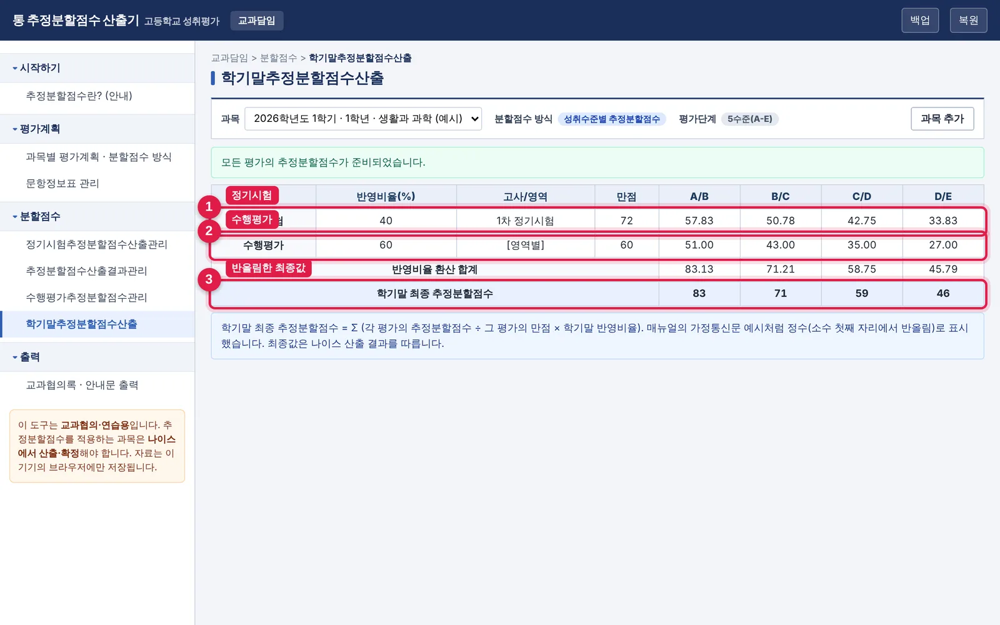
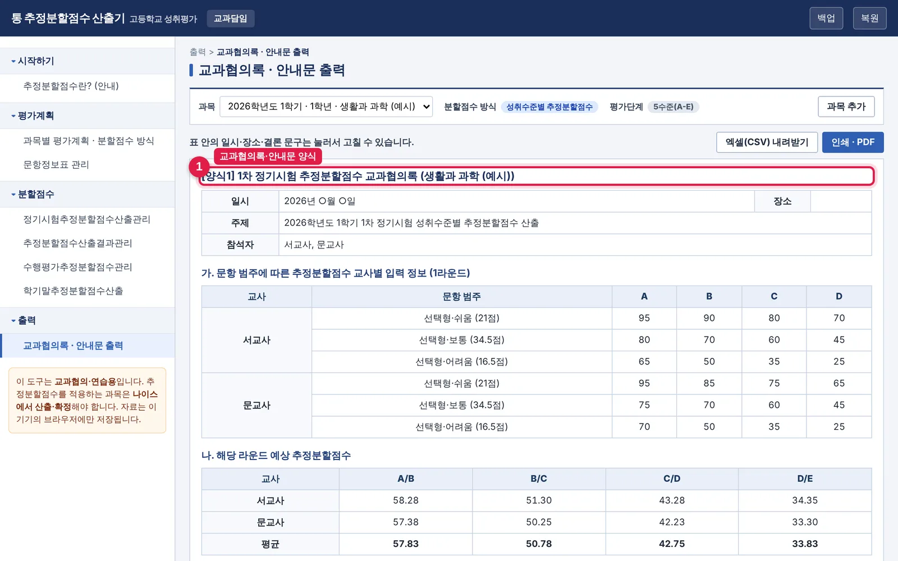

처음이어도 괜찮아요
정기시험·수행평가의 추정분할점수를 나이스에 입력하기 전에, 교과협의회에서 함께 계산하고 협의록까지 만드는 도구입니다.
그림과 화면을 따라 1 → 8 단계로 진행하세요.
⏱ 처음 30분이면 충분👥 교사 여러 명 공동 입력💾 자료는 내 기기에만 저장🏫 최종 확정은 나이스에서
한눈에전체 흐름 — 시험 보기 전에 끝냅니다
왼쪽 메뉴 순서가 곧 작업 순서입니다. 핵심은 가운데 라운드 반복입니다.
⚠️ 순서가 중요해요추정분할점수는 평가를 시행하기 전에 산출·심의하고 학생·학부모에게 공지합니다. 시험이 끝난 뒤 결과를 보고 바꾸는 점수가 아닙니다.
개념추정분할점수란?
성취도 A·B·C·D·E를 나누는 경계 점수를, 고정값 대신 시험 난이도에 맞게 선생님들이 추정한 값입니다.
아래쪽 막대는 STEP 7 화면의 예시(생활과 과학, 5수준) 학기말 결과 83·71·59·46점입니다.
계산점수는 이렇게 계산돼요
어려운 수식은 도구가 합니다. 선생님은 “최소 능력자의 예상 정답률(%)”만 넣으면 됩니다.
📌 정답률은 어떻게 정하나요?A~D는 5% 단위, E는 1% 단위로 적습니다. 어떤 수준을 목표로 낸 문항이면, 그 수준에 겨우 닿은 학생은 선택형에서 약 65%를 맞힌다고 보고 시작합니다. 더 어려운 문항이 섞이면 65%보다 낮게, 쉬운 문항이 섞이면 높게 잡습니다. 산출관리 화면의 [목표 성취수준으로 참고값 채우기] 버튼을 누르면 이 기준으로 초안이 채워집니다.
숫자는 [예시 ①] 통합사회1 1라운드 값으로, 산출기 화면과 같습니다.
STEP 1시작하기 — 예시로 먼저 감 잡기
왼쪽 메뉴 › 시작하기 › 추정분할점수란? (안내)
- 1예시 과목 버튼을 먼저 눌러 보세요. 4명이 협의해 2라운드에 확정하는 과정이 모두 들어 있습니다.예시는 언제든 지워도 되고, 내 과목과 섞이지 않습니다.
- 2익숙해지면 [새 과목 만들기]로 내 과목을 만듭니다.
STEP 2평가계획 입력
왼쪽 메뉴 › 평가계획 › 과목별 평가계획 · 분할점수 방식
- 1평가단계를 고릅니다.공통과목 등 최소 성취수준 보장지도 과목 → 5수준+미도달
미도달이 없는 선택과목 → 5수준(A~E) - 2담당 교사를 모두 넣습니다. 이 사람들의 점수 평균이 결과가 됩니다.
- 3정기시험·수행평가의 만점과 반영비율을 넣습니다.합계 칸이 초록색(100%)이 되면 맞게 넣은 것입니다.
STEP 3문항정보표 입력
왼쪽 메뉴 › 평가계획 › 문항정보표 관리
- 1엑셀 이원목적분류표가 있으면 [엑셀에서 붙여넣기]로 한 번에 넣습니다.열 순서: 문항구분 · 난이도 · 배점 · (성취기준) · (목표 성취수준)
- 2문항마다 유형(선택형/논술형) · 난이도 · 배점을 확인합니다. 목표 성취수준(A~E)도 적어 두면 정답률을 정할 때 기준이 됩니다.
- 3아래 문항 범주 표가 자동으로 만들어집니다(유형 × 난이도, 최대 6개).위쪽 배점 합계가 만점과 같아야 초록색으로 바뀝니다.
STEP 4예상 정답률 입력 (교사마다)
왼쪽 메뉴 › 분할점수 › 정기시험추정분할점수산출관리
- 1라운드를 고릅니다. 처음엔 1라운드입니다.
- 2교사를 고릅니다. 입력을 마친 교사 이름 옆에는 ✓가 붙습니다.
- 3범주마다 A·B·C·D·E 칸에 최소 능력자의 예상 정답률(%)을 넣습니다.A 칸 = “A에 겨우 닿은 학생이 이 범주에서 몇 %를 맞힐까?”
- 4맨 아래에 그 교사의 분할점수가 바로 계산됩니다.
- 5선생님들이 각자 자기 휴대폰으로 넣게 하려면 [📱 참여 링크 · QR] → 다음 STEP 4+를 보세요.
💡 한 자리에 모였다면대표 선생님 노트북 한 대에서 ②의 교사 이름만 바꿔 가며 차례로 넣어도 됩니다.
STEP 4+선생님들이 각자 입력하기 (QR · 응답 코드)
서버에 저장하지 않습니다. 링크와 응답 코드를 학교 메신저로 주고받는 방식입니다.

- 1QR 또는 [링크 복사]로 담당 선생님들께 보냅니다.
- 2받은 응답 코드를 붙여넣고 [반영하기]. 여러 개를 줄바꿈으로 한 번에 넣어도 됩니다.
- 3응답 현황에 ✓가 모두 붙으면 다 모인 것입니다.

💡 링크에는과목명·문항 범주·교사 이름만 들어 있고 학생 정보는 없습니다. 라운드가 바뀌면 새 링크를 만들어 보내세요.
STEP 5결과 확인 · 협의 · 라운드 확정
왼쪽 메뉴 › 분할점수 › 추정분할점수산출결과관리
- 1맨 위 안내가 완료 기준을 알려 줍니다. 최소 2라운드, 모든 범주의 교사 간 차이 20%p 미만입니다.
- 2라운드마다 교사별 분할점수와 평균이 나옵니다.
- 3아래 차이 표에서 주황색 칸(20%p 이상)이 협의할 곳입니다.“왜 이 범주를 그렇게 봤는지” 이야기 나눈 뒤 → STEP 4에서 [현재 라운드 복사] → 고칠 사람만 고칩니다.
- 4기준을 만족한 라운드에서 [확정]을 누릅니다. 확정한 라운드의 평균이 정기시험 추정분할점수가 됩니다.
⚠️ 하지 말아야 할 것미도달 학생을 줄이려고 E를 일부러 낮게, A 비율을 늘리려고 A를 낮게 넣지 않습니다.
STEP 6수행평가 분할점수
왼쪽 메뉴 › 분할점수 › 수행평가추정분할점수관리
- 1채점기준표의 평가요소마다 각 성취수준의 최소 능력자가 받는 점수를 넣습니다. 맨 아래 합계가 그 영역의 분할점수입니다(정수).영역이 여러 개면 [영역 추가]. 채점기준이 없으면 [전체영역] 탭에서 직접 입력합니다.
E 분할점수는 기본점수보다 높아야 합니다.
STEP 7학기말 추정분할점수
왼쪽 메뉴 › 분할점수 › 학기말추정분할점수산출
- 1정기시험: 확정한 라운드의 평균이 자동으로 들어옵니다.
- 2수행평가: STEP 6의 영역 합계가 들어옵니다.
- 3학기말 최종 추정분할점수(소수 첫째 자리에서 반올림한 정수)입니다.초록색 “모든 평가의 추정분할점수가 준비되었습니다”가 보이면 완료입니다.
STEP 8출력하고 나이스에 입력
왼쪽 메뉴 › 출력 › 교과협의록 · 안내문 출력
- 1[양식1] 교과협의록, [양식3~6] 안내용 표를 인쇄(Ctrl+P)하거나 CSV로 내려받습니다.
🏫 마지막은 반드시 나이스에서추정분할점수를 쓰는 과목은 나이스에서 산출·확정해야 합니다. 이 도구의 값을 보며 나이스에 같은 정답률을 입력하고, 결과가 같은지 확인하세요. 이어서 학업성적관리위원회 심의 → 시험 전 공지입니다.
💾 다른 컴퓨터에서 이어 하려면자료는 이 브라우저에만 저장됩니다. 위쪽 [백업]으로 파일을 받아 두고, 다른 기기에서 [복원]하세요.
확인매뉴얼 반영 확인표
경기도교육청 「고등학교 성취평가 추정분할점수 이렇게 산출해요(실전편)」(2026.4)의 규칙이 도구 어디에 들어 있는지 정리했습니다.
| 매뉴얼 규칙 | 도구에서 | 반영 |
|---|---|---|
| 문항을 유형(선택형/논술형) × 난이도(쉬움/보통/어려움)로 범주화, 최대 6개 | STEP 3 문항 범주 표 자동 생성, 6개 초과 시 경고 | ✓ 반영 |
| 교사별 분할점수 = Σ(범주 배점합 × 최소 능력자 예상 정답률) | STEP 4 맨 아래 줄. 매뉴얼 예시 김교사 57.375점과 같은 값 | ✓ 반영 |
| 예상 정답률 A~D 5% 단위, E 1% 단위 | STEP 4 입력 칸 단위, 어긋나면 빨간 안내 | ✓ 반영 |
| 목표 성취수준 문항이면 그 수준 최소 능력자의 예상 정답률 약 65% | [목표 성취수준으로 참고값 채우기] | ✓ 반영 |
| 해당 과목 담당 교사 모두 입력, 결과는 교사별 분할점수의 평균 | STEP 2 담당 교사 · STEP 5 평균 · STEP 4+ 공동 참여 | ✓ 반영 |
| 최소 2라운드, 교사 간 차이 20%p 이상 범주 중심 협의 | STEP 5 완료 기준 안내와 주황색 표시 | ✓ 반영 |
| 수행평가: 채점기준 수행 수준과 성취수준 연계, 최소 능력자 점수 합(정수), E는 기본점수보다 높게 | STEP 6 영역별 표 · 경고 | ✓ 반영 |
| 학기말 = Σ(분할점수 ÷ 만점 × 반영비율), 반영비율 합 100% | STEP 7 · STEP 2 합계 확인. 매뉴얼 학기말 예시와 같은 값 | ✓ 반영 |
| 평가단계 5수준+미도달 / 5수준 구분 | STEP 2 평가단계 | ✓ 반영 |
| 교과협의록(양식1), 학생·학부모 안내용 표(양식3~6) | STEP 8 출력 | ✓ 반영 |
| 추정분할점수 과목은 나이스에서 산출·확정 | 모든 화면 왼쪽 안내 · STEP 8. 이 도구는 협의·연습용 | ✓ 안내 |
메뉴 이름은 매뉴얼에 실린 나이스 경로(교과담임 › 분할점수 › 정기시험추정분할점수산출관리 등)를 따랐습니다. 나이스 화면은 기능 개선에 따라 바뀔 수 있고, 학교·시도교육청 지침이 있으면 그것이 우선합니다.
Q&A자주 묻는 질문
- Q입력한 자료는 어디에 저장되나요?지금 쓰는 브라우저에만 저장됩니다. 서버로 보내지 않습니다. 기기를 바꿀 땐 [백업] → [복원].
- Q교사 한 명이 응답을 안 하면요?입력한 교사들만으로 평균이 계산되지만, 휴직 등 특별한 사유가 아니면 모두 참여해야 합니다.
- Q2차 정기시험은요?STEP 2에서 [정기시험 추가] 후 STEP 3~5를 같은 방법으로 반복합니다. 화면 위쪽 ‘고사’ 칸에서 시험을 바꿉니다.
- Q확정을 되돌리고 싶어요.STEP 5 화면에서 [확정취소]를 누르면 다시 고칠 수 있습니다.